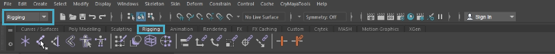
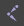
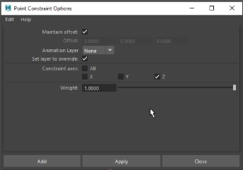
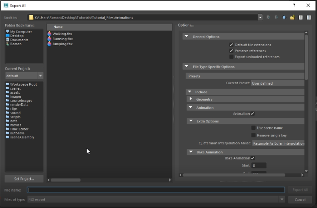
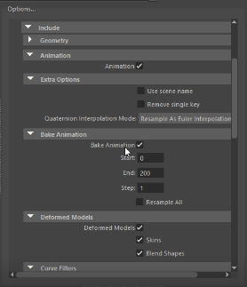
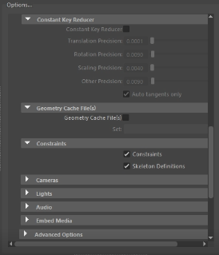
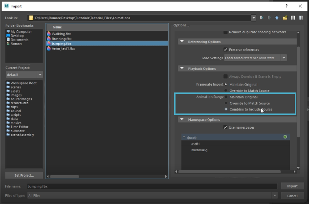
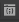
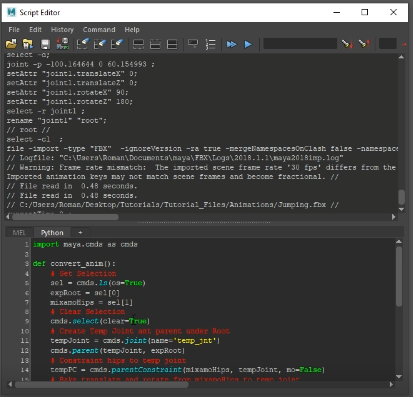

Prerequisites
- A character with a T-Pose and other animations.
Setting Up a Root Bone
For the translation of an animation, CRYENGINE requires a root bone that acts as the first bone in the parent-child hierarchy of joints.
Usually the relative position of the character is made the '"root", which makes it easier to reorient the model than if, say, the hip joint acted as the root. The root bone is also responsible for translating/rotating the model relative to the world space.
Choose and import your first animation into Maya using the File → Import option from its main menu. If not already docked, click the
You need to add a root bone to your animation. To do so:
- Switch to the Rigging menu set in Maya, and select the Rigging shelf tab as shown in the image below.

Rigging - Click the

- Next, place the joint at (0,0,0) so that it's right underneath your character.
Navigate to the Channel Box and set the joint's Translate X/Y/Z values to 0. - Additionally, to correctly position the joint in CRYENGINE's coordinate system, set Rotate X = 90, Rotate Y = 0, and Rotate Z = 180.
- Finally, rename this joint to "root" by double-clicking on its listing in the Outliner.
Pairing the Root Bone with the Hip Bone
Begin by creating a point constraint between the hip bone and the root bone.
Click on the hip bone, and then on the root bone in the Outliner while holding CTRL.
Make sure you click on the hip first, as the root bone needs to follow the hip.
- In the main menu (with the Rigging menu set enabled), select the Constrain → Point →
option to bring up the Point Constraint Options dialog, which contains additional properties we can modify. - Keep the Maintain Offset and Set layer to override options ticked; since we're only going to constrain the Z axis, only enable the Constraint axes → Z option. Click Apply and then close the dialog.

Point Constraint Options dialog
You've now attached the root bone to the moving animation.
Baking the Animation to the Root Bone
To bake the animation, or rather, the translation information from the hip to the root bone:
- Switch to the Animation menu set.
- Select the root bone, and then select the Key → Bake Animation option.
If you play your animation now, you should see the root bone move along with it. Additionally, if you expand the root bone's listing in the Outliner, you should be able to see listed the point constraint that was created with the hip bone. Go ahead and delete it since it's not needed anymore.
Making the Hip a Child of the Root
- Since CRYENGINE requires a root bone to be at the top of the joint hierarchy however, the hip needs to be made a child of the root as follows:
- Select the hip bone in the Outliner.
- In the Channel Box, select the Translate X/Y/Z options, right-click, and then click the Delete Selected option from the context menu.
- Click the
icon beside the root bone, and drag it to to the root bone.
This deletes all translation movements from the hip, so that the root bone is the one driving the animation.
If you'd like the animation to play at a fixed position, you can get rid of the forward motion by selecting the root node in the Outliner, and deleting the Translate X/Y/Z options from the Channel Box.
Exporting the Animation
- Select the File → Export All option from the main menu in Maya.
- In the Export All window, set where you'd like the file to be exported to, and select the FBX export option from the Files of type dialog to export the animation in FBX format.

Export All dialog - Next, in the Options... panel, navigate to the Animation tab and enable the Animation option. Also enable Bake Animation under the Bake Animation panel.

Bake Animation
4. If you'd also like to export constraints and/or skeleton definitions, if any, tick their corresponding boxes under the Constraints tab. Finally, click on Export in the Export All dialog to complete the process.

Constraints
Importing Animations via a Python Script
You could also, as an option, use a Python script to speed up the process of exporting characters and animations together:
- Begin by importing a T-posed character into Maya.
- Create a root bone, as explained previously, and set Rotate X = 90, Rotate Y = 0, and Rotate Z = 180. Make sure to name it "root".
- Next, import an animation of choice; while doing so however, make sure to check the Animation Range → Combine to include Source option under the Playback Options tab of the Import dialog. This combines both the T-pose and jump animation in the exported output.

Combine to include source - Download the following Python script.
transformAnim.py - Click the


Drag/drop the script
6. Select the root and hip bones in the Outliner, before clicking the
7. You can now export the character and animation using the File → Export All option from the main menu in Maya.
Make sure to remove the Translate X/Y/Z options of the root bone, if you'd like to remove the forward motion of the animation.
Importing into CRYENGINE
To test the exported animations in CRYENGINE:
- Create/open an empty level, and then create a new folder in the Asset Browser; drag and drop your FBX files into this folder.
- Once all your imported files have been generated, drag the .cdf (Character Definition File) into the Viewport.
- With the character selected in the Viewport, assign an animation to it using the DefaultAnimation field in the Properties panel.
If the animation was correctly reoriented in Maya, you should now be able to see it playing in the Y (forward) direction of CRYENGINE's world coordinate system.